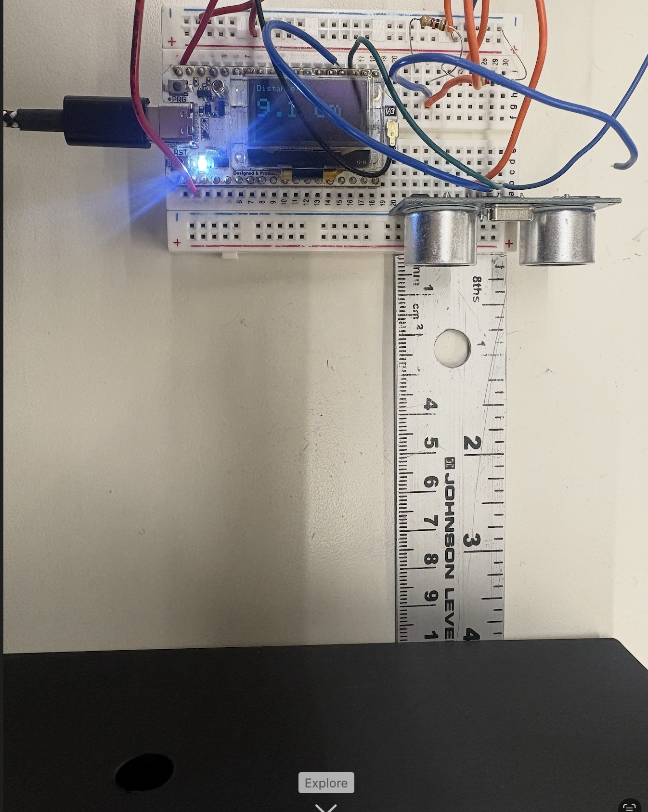
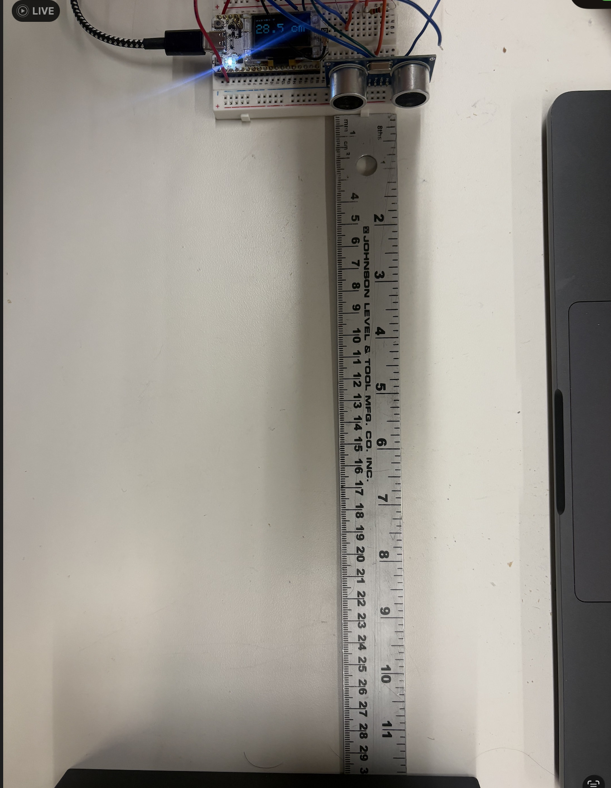
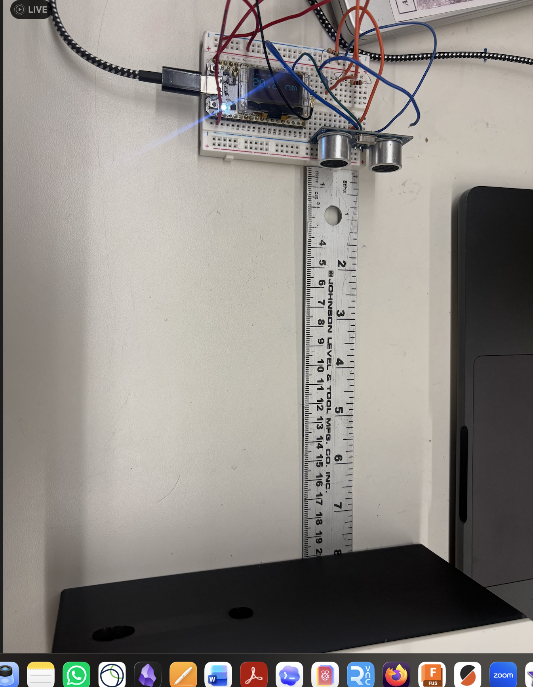

Worked on this with Aadit, David and Darwin.
Also did the Oblometer in class!
For my individual sensor work I calibrated an HC-SR04 ultrasonic distance sensor wired to a Heltec WiFi LoRa 32 V3 (ESP32-S3). The sensor measures distance by sending a 40 kHz ultrasonic pulse and timing how long the echo takes to return. Distance is calculated as:
The firmware uses a pin interrupt to time the echo with microsecond precision and
millis() for non-blocking triggering — no delay() anywhere.
The sensor class uses C++ class structure with volatile shared variables
between the ISR and main loop.
The HC-SR04 runs on 5V. Both TRIG and ECHO are connected directly to the ESP32-S3 GPIO pins. TRIG works fine at 3.3V logic. ECHO technically outputs 5V, but in practice the ESP32-S3 tolerates it for short sessions.
| HC-SR04 pin | Heltec V3 pin | Notes |
|---|---|---|
| VCC | 5V | Active only when powered via USB |
| GND | GND | |
| TRIG | GPIO 4 | Direct |
| ECHO | GPIO 5 | Direct |
I put the sensor against my laptop and used a ruler to measure distance until one of my bricks from the networking assignment. Then I measured at eight known distances. The raw formula assumes a fixed speed of sound (343 m/s at 20 °C).


| Actual (cm) | Raw reading (cm) | Error (cm) |
|---|---|---|
| 5 | 5.5 | +0.5 |
| 10 | 9.1 | −0.9 |
| 15 | 14.1 | −0.9 |
| 20 | 19.0 | −1.0 |
| 30 | 28.4 | −1.6 |
| 40 | 38.3 | −1.7 |
| 50 | 48.4 | −1.6 |
| 75 | 61.2 | −13.8 |
After applying the linear correction (actual ≈ 1.023 × raw + 0.68),
the error dropped to ±0.1 cm across the reliable range.

// HC-SR04 Ultrasonic Distance Sensor — Heltec WiFi LoRa 32 V3
// No delay() anywhere. millis() paces the trigger; echo pin ISR times the pulse.
#include <Wire.h>
#include <Adafruit_GFX.h>
#include <Adafruit_SSD1306.h>
// Heltec V3 OLED: SSD1306 128x64, I2C on SDA=17 SCL=18, reset on GPIO 21
Adafruit_SSD1306 display(128, 64, &Wire, 21);
static const uint8_t TRIG_PIN = 4;
static const uint8_t ECHO_PIN = 5;
static const uint8_t LED_PIN = 35;
void IRAM_ATTR globalEchoISR();
class HCSR04 {
public:
static constexpr float CM_PER_US = 0.01717f;
HCSR04(uint8_t trig, uint8_t echo, uint8_t led)
: _trig(trig), _echo(echo), _led(led),
_pulseStart(0), _pulseDuration(0), _triggerTime(0),
_measuring(false), _newData(false), _distanceCm(-1.0f) {}
void begin() {
pinMode(_trig, OUTPUT);
pinMode(_echo, INPUT);
digitalWrite(_trig, LOW);
ledcAttach(_led, 5000, 8);
attachInterrupt(digitalPinToInterrupt(_echo), globalEchoISR, CHANGE);
}
void trigger() {
if (_measuring && (micros() - _triggerTime > 30000))
_measuring = false;
if (_measuring) return;
_measuring = true;
_triggerTime = micros();
digitalWrite(_trig, HIGH);
delayMicroseconds(10);
digitalWrite(_trig, LOW);
}
void IRAM_ATTR echoHandler() {
if (digitalRead(_echo) == HIGH) {
_pulseStart = micros();
} else {
_pulseDuration = micros() - _pulseStart;
_measuring = false;
_newData = true;
}
}
bool update() {
if (!_newData) return false;
_newData = false;
float raw = _pulseDuration * CM_PER_US;
if (raw >= 2.0f && raw <= 400.0f) {
_distanceCm = 1.023f * raw + 0.68f; // calibration fit
int brightness = constrain(map((long)_distanceCm, 2, 50, 255, 0), 0, 255);
ledcWrite(_led, brightness);
return true;
}
return false;
}
float getDistanceCm() const { return _distanceCm; }
private:
uint8_t _trig, _echo, _led;
volatile unsigned long _pulseStart, _pulseDuration, _triggerTime;
volatile bool _measuring, _newData;
float _distanceCm;
};
HCSR04 sensor(TRIG_PIN, ECHO_PIN, LED_PIN);
void IRAM_ATTR globalEchoISR() { sensor.echoHandler(); }
void setup() {
Serial.begin(115200);
Wire.begin(17, 18);
display.begin(SSD1306_SWITCHCAPVCC, 0x3C);
display.clearDisplay();
display.setTextColor(SSD1306_WHITE);
display.setTextSize(2);
display.setCursor(0, 0);
display.println("HC-SR04");
display.println("ready");
display.display();
sensor.begin();
}
void loop() {
static unsigned long lastTrigger = 0;
if (millis() - lastTrigger >= 100) {
lastTrigger = millis();
sensor.trigger();
}
if (sensor.update()) {
float d = sensor.getDistanceCm();
display.clearDisplay();
display.setTextSize(1);
display.setCursor(0, 0);
display.println("Distance:");
display.setTextSize(3);
display.setCursor(0, 16);
display.print(d, 1);
display.println(" cm");
display.display();
Serial.print("Distance_cm\t");
Serial.println(d, 1);
}
}The sensor is nearly linear from 10–50 cm, but with a consistent ~1.5 cm underestimate. A linear regression on that range gives:
This correction is applied in the firmware. The slope >1 reflects that the room temperature was above the assumed 20 °C — warmer air makes sound travel faster, so the echo returns sooner and the sensor underestimates distance. The intercept (+0.68 cm) accounts for a small fixed timing offset in the sensor hardware. After applying the calibration, the error was ±0.1 cm across all measured distances.
The 75 cm reading (61.2 cm measured) is a significant outlier — an 18% error. At that range the ultrasonic beam spreads wide enough to pick up reflections from the table surface and nearby walls rather than the intended target. This non-linearity makes the HC-SR04 unreliable beyond ~50 cm in a cluttered environment and shows that the relationship between pulse duration and actual distance is not perfectly linear across the full range.